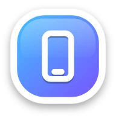
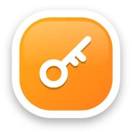
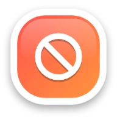
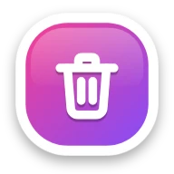

En pocas palabras

Tus fotos no salen de tu celular. El recorte, las letras y las animaciones se hacen en el teléfono. Sólo sube lo que vos publicás.
Entrás con Google, pero no guardamos tu mail. De tu cuenta de Google guardamos sólo una huella de su número identificador.
No vendemos tus datos. No usamos tu ubicación, tus contactos ni tu micrófono. Hoy la app no tiene anuncios; si algún día los suma, los muestra Google y en Europa te pide permiso antes.
Borrás todo cuando quieras, desde la app o desde esta página, y se borra al instante.
1Quiénes somos
Stickerazo es una app para hacer stickers de WhatsApp con tus fotos y compartirlos en una comunidad. La desarrolla y la mantiene un equipo independiente en Argentina, que es el responsable de los datos que se describen acá («nosotros»).
Por cualquier tema de privacidad nos escribís desde el formulario de contacto, eligiendo «Privacidad y mis datos». Stickerazo no está afiliada a WhatsApp, Meta ni Google.
2Qué datos usamos y para qué
Podés hacer stickers sin crear ninguna cuenta. Los datos de esta tabla se usan sólo si entrás a la comunidad, o en los casos que se aclaran:
| Dato | Para qué | ¿Hace falta? |
|---|---|---|
| Identificador de tu cuenta de Google | Reconocerte cuando entrás, que nadie se haga pasar por vos y que no pierdas tu cuenta si cambiás de celular. Guardamos una huella (un código calculado a partir del identificador que nos da Google), no el identificador en sí. No guardamos tu mail, tu nombre ni tu foto de Google, ni vemos tu contraseña. | Para la comunidad |
| Tu @usuario | Tu nombre en la comunidad. Lo elegís vos y lo ve todo el mundo. | Para la comunidad |
| Bio, emoji y color de tu avatar | Personalizar tu perfil. | Opcional |
| Foto de perfil y portada | Mostrarlas en tu perfil y en tus packs. Las elegís de tu galería y se recortan en el celular antes de subirlas. | Opcional |
| Los packs que publicás | Mostrarlos en la comunidad: los stickers terminados, el nombre, las etiquetas y los emojis. Nunca las fotos originales. | Si publicás |
| Tus publicaciones en «Social» | Mostrarlas en la comunidad: el texto, las fotos, los stickers y los videos cortos que elijas. Los videos se convierten en el celular en una imagen animada de hasta 4 segundos sin sonido; las fotos se achican antes de subir. | Si publicás |
| Tus amigos y tus mensajes | Que puedas chatear: a quién le mandaste o aceptaste un pedido de amistad, y los mensajes y stickers que se mandan entre amigos, guardados en el servidor para que los dos puedan leerlos desde cualquier celular. No los leemos, salvo un mensaje que alguien denuncie, para revisarlo. | Si chateás |
| Tu actividad en la comunidad | Que la comunidad funcione: me gusta, a quién seguís, qué packs bajaste, a quién bloqueaste y qué denunciaste. También para recomendarte packs en «Para vos». | Para la comunidad |
| Una huella de tu conexión | Frenar abusos (muchas cuentas, mensajes o subidas seguidas). Es un código calculado a partir de tu dirección IP; la IP no la guardamos y la huella se borra sola en 24 horas como mucho. | Automático |
| Mensajes de contacto | Responderte. Guardamos el motivo, el mensaje y tu mail sólo si lo escribís. | Si nos escribís |
Para entregarte la app y esta página, nuestros proveedores de servidores procesan por un momento datos técnicos de cualquier conexión a internet, como tu dirección IP y el tipo de navegador. No los usamos para identificarte ni armamos perfiles con ellos.
3Lo que queda sólo en tu celular
Esto se guarda adentro de la app, en tu teléfono, y no se manda a ningún servidor:
- Las fotos que elegís o sacás para hacer stickers, y los recortes.
- Tus stickers y packs mientras no los publiques, incluidos los que agregás a WhatsApp.
- Tus preferencias: país, modo claro u oscuro, música, packs que marcaste con «No me interesa».
- La llave de tu sesión, para no tener que entrar cada vez. En el servidor sólo queda su huella.
Si desinstalás la app, Android borra todo esto.
4Lo que no hacemos
- No vendemos ni alquilamos tus datos.
- No usamos tus fotos, tus stickers ni lo que escribís para mostrarte publicidad.
- Fuera de los anuncios de Google (punto 14), no usamos herramientas de análisis ni de seguimiento de terceros, ni en la app ni en esta página.
- No accedemos a tu ubicación, tus contactos, tu micrófono, tus mensajes ni a la galería completa: sólo a la foto que elegís en cada momento.
- No usamos tus fotos ni tus stickers para entrenar inteligencia artificial.
5Por qué podemos usarlos
- Porque nos lo pedís: para darte el servicio que elegiste usar (tu cuenta, publicar, seguir, bajar packs), según los términos.
- Porque nos das tu consentimiento: para lo opcional, como la foto de perfil, la portada o el mail en el contacto. Lo podés retirar cuando quieras borrándolo.
- Para cuidar la comunidad: la huella de conexión, las denuncias y los bloqueos sirven para frenar abusos y moderar.
- Porque la ley lo exige: cuando una autoridad competente nos lo pida de forma válida.
6Con quién los compartimos
No compartimos tus datos con nadie para que los use por su cuenta. Estos servicios trabajan para que Stickerazo funcione, cada uno con su propia política:
| Servicio | Para qué | Qué recibe |
|---|---|---|
| Cloudflare | Los servidores y la base de datos de la comunidad, y esta página. | Todo lo que sube a la comunidad (tabla del punto 2) y los datos técnicos de la conexión. Su política. |
| Entrar con tu cuenta de Google. | Google sabe que usaste tu cuenta para entrar a Stickerazo. Nos manda tu identificador y Google decide qué otros datos incluye; de eso sólo guardamos la huella. Su política. | |
| YouTube | La música de tu país, con su reproductor oficial. | Sólo si usás la música: YouTube recibe lo que mirás y escuchás, como en su app. Lo que buscás pasa por nuestro servidor para pedírselo a YouTube, sin asociarlo a tu cuenta. Al usarla aceptás los Términos de YouTube y la política de Google. |
| GitHub | Las actualizaciones de la app y el archivo para instalarla. | Datos técnicos de la descarga, como en cualquier página. No se manda ningún dato tuyo. |
| Google AdMob | Los anuncios de la app, sólo en las versiones que los muestren (hoy ninguna). | El SDK de anuncios de Google junta datos de tu celular para mostrar y medir anuncios y frenar fraudes: el identificador de publicidad, datos del aparato y de la conexión (con la IP, una ubicación aproximada) y cómo interactuás con los anuncios. Ver el punto 14 y cómo usa Google estos datos. |
| GIPHY y KLIPY | Que tus clips con sonido aparezcan en el buscador de stickers de WhatsApp. | Sólo si usás «Publicar con sonido» y lo aprobamos: el video, su título, sus etiquetas y su código, publicados en el canal de Stickerazo (no tu @usuario ni tu cuenta). Ahí son públicos y siguen la política de GIPHY o de KLIPY. |
| Usar tus stickers. | Cuando tocás «Agregar a WhatsApp», WhatsApp lee los stickers desde la app en tu celular. No pasan por nuestros servidores. | |
| La tienda de donde la bajaste | Instalar y actualizar la app (Galaxy Store, AppGallery, Uptodown, Google Play). | Lo que esa tienda junte según su política. Nosotros recibimos de ellas sólo números totales (cuántas descargas hubo). |
Si en el futuro Stickerazo pasara a otras manos, tus datos seguirían protegidos por esta política y te avisaríamos antes.
Transferencias a otros países
Estos proveedores tienen servidores en distintos países, entre ellos Estados Unidos. Elegimos servicios que se comprometen a proteger los datos con medidas adecuadas, como cláusulas contractuales y cifrado.
7Qué es público
Cualquier persona puede ver, aunque no tenga cuenta, tu @usuario, tu bio, tu avatar, tu foto de perfil y tu portada, los packs que publicaste (salvo los que ocultaste) y cuántos seguidores, me gusta y descargas tenés. Los packs se pueden compartir con un enlace.
Tus publicaciones de «Social» también son públicas: las ve cualquiera en la app, con tu @usuario. Tus amigos y tus mensajes no son públicos: un chat lo ven sólo las dos personas que hablan, y sólo se puede chatear con alguien después de que los dos aceptaron ser amigos.
Los clips con sonido que mandás con «Publicar con sonido» los revisamos y, si los aprobamos, se publican en el canal de Stickerazo en GIPHY o KLIPY: cualquiera los puede encontrar ahí y en el buscador de stickers de WhatsApp, sin tu @usuario. Si borrás un clip o tu cuenta, lo borramos de nuestros servidores y lo sacamos de esos canales.
Cuando alguien baja uno de tus packs, esos stickers quedan en su celular y en su WhatsApp. Si después borrás el pack o tu cuenta, desaparece de la comunidad, pero no podemos sacarlo del teléfono de otra persona.
8Cuánto tiempo los guardamos
- Tu cuenta y lo que publicaste: hasta que los borres. Al borrar la cuenta se borran al instante tu perfil, tus packs, tus archivos, tus me gusta, a quién seguís y quién te sigue, tus bloqueos, tus denuncias, tus descargas, tus publicaciones, tus amigos y tus mensajes. Las copias de seguridad automáticas del proveedor se pisan solas en 30 días como mucho.
- Tus publicaciones y tus mensajes: las publicaciones, hasta que las borres. Los mensajes, hasta que alguno de los dos borre su cuenta; ahí se borra la conversación entera para los dos, con sus stickers. Si bloqueás a alguien, deja de ser tu amigo y no te puede escribir más.
- Un pack que borrás u ocultás: deja de verse en el momento. Si alguien lo tenía abierto, puede seguir viéndolo hasta 24 horas por la memoria del navegador.
- La entrada con Google: el paso intermedio entre la página de Google y la app dura 10 minutos, o 30 si estás eligiendo tu @. Después se borra.
- La huella de conexión: 24 horas como mucho.
- Los mensajes de contacto: hasta resolverlos, y 12 meses como máximo.
- Las cuentas bloqueadas por violar las reglas: guardamos lo mínimo para que no se vuelvan a crear, mientras haga falta.
9Cómo los cuidamos
- Todo viaja cifrado (HTTPS).
- No guardamos contraseñas ni llaves en texto: sólo huellas que no se pueden revertir.
- Las actualizaciones de la app vienen firmadas, y el celular las rechaza si alguien las cambió. El archivo para instalar la app también está firmado, siempre con la misma llave.
- Las llaves de firma y los accesos de moderación están fuera del código y sólo los tiene el equipo.
- La página para entrar con Google sólo sirve en el celular que la pidió: ver la dirección no alcanza para entrar a tu cuenta.
Ningún sistema es 100 % seguro. Si pasara algo que afecte tus datos, lo vamos a avisar en la app y en esta página, y a las autoridades cuando corresponda.
10Menores de edad
La comunidad es para personas de 13 años o más, o la edad mínima que pida tu país para dar consentimiento en internet (por ejemplo, 16 en algunos países de Europa). Si tenés menos de 18, usala con el permiso de tu mamá, tu papá o quien te cuide. No buscamos datos de menores de 13. Si nos enteramos de que hay una cuenta de alguien más chico, la borramos. Si sos madre, padre o tutor y creés que pasó, escribinos.
11Tus derechos
Podés, cuando quieras y sin costo:
- Ver qué datos tenemos tuyos (acceso) y pedir una copia en un formato que se pueda leer (portabilidad).
- Corregirlos o actualizarlos: casi todo lo cambiás vos en «Editar perfil».
- Borrarlos: desde la app (Perfil → Borrar mi cuenta) o desde la web.
- Oponerte a un uso o retirar tu consentimiento para lo opcional.
Para todo lo que no puedas hacer desde la app, escribinos por el formulario eligiendo «Privacidad y mis datos». Para confirmar que la cuenta es tuya te vamos a pedir que entres con la misma cuenta de Google. Respondemos dentro de los plazos de la ley: en Argentina, 10 días corridos para el acceso y 5 días hábiles para corregir o borrar.
El titular de los datos personales tiene la facultad de ejercer el derecho de acceso a los mismos en forma gratuita a intervalos no inferiores a seis meses, salvo que se acredite un interés legítimo al efecto conforme lo establecido en el artículo 14, inciso 3 de la Ley N° 25.326. La AGENCIA DE ACCESO A LA INFORMACIÓN PÚBLICA, en su carácter de Órgano de Control de la Ley N° 25.326, tiene la atribución de atender las denuncias y reclamos que interpongan quienes resulten afectados en sus derechos por incumplimiento de las normas vigentes en materia de protección de datos personales.
Si vivís en otro país, también podés reclamar ante la autoridad de protección de datos de tu país, por ejemplo la ANPD en Brasil o la autoridad de tu país en la Unión Europea. Respetamos los derechos que te den esas leyes, como la LGPD en Brasil o el RGPD en Europa.
12Permisos de la app
| Permiso | Para qué |
|---|---|
| Internet | La comunidad, las actualizaciones y la música. Hacer stickers anda sin internet. |
| Vibrar | La vibracioncita al tocar algunos botones. |
| ID de publicidad y red (sólo en versiones con anuncios; hoy ninguna) | Los usa el SDK de anuncios de Google (AdMob) para mostrar y medir los anuncios. Los agrega Google, igual que los permisos de «Privacy Sandbox» de Android para anuncios con más privacidad, y los servicios en segundo plano que usa su librería. |
| Instalar actualizaciones | Sólo en la versión que se baja de esta página: instalar la versión nueva de Stickerazo cuando tocás «Actualizar». Las versiones de las tiendas no lo tienen, porque las actualiza la tienda. |
La app no pide permiso para leer tus fotos ni para usar la cámara. Para las fotos usa el selector de Android, que le da sólo la que elegiste. Para la cámara abre la app de cámara de tu celular.
13Cookies y almacenamiento
Esta página no usa cookies ni herramientas de seguimiento. La app guarda sus cosas en tu celular (punto 3), y el SDK de anuncios de Google guarda las suyas (como tu elección de consentimiento). La página para entrar con Google y el reproductor de YouTube son de Google, que puede usar sus propias cookies según su política. Para la música usamos la versión del reproductor «sin cookies» de YouTube, que pone menos.
14Anuncios y compras
Hoy la app no muestra anuncios. Si para seguir siendo gratis algún día los suma, lo avisamos antes y van a ser de Google AdMob, así: un banner abajo de todo, que se esconde mientras recortás o editás, y de vez en cuando uno de pantalla completa en una pausa (por ejemplo, después de agregar un pack a WhatsApp), nunca más de uno cada 4 minutos.
- Quién los muestra: Google, con su SDK de anuncios. Nosotros no le pasamos tus fotos, tus stickers, tu @ ni tu cuenta. Google junta por su cuenta los datos que dice el punto 6.
- Consentimiento: si estás en el Espacio Económico Europeo, el Reino Unido o Suiza, antes de cualquier anuncio aparece el aviso de Google para que elijas. Lo cambiás cuando quieras en Perfil → Ajustes → Privacidad de los anuncios.
- Tu ID de publicidad: lo podés restablecer o borrar desde los ajustes de Android (Privacidad → Anuncios, o Google → Anuncios). Sin él, los anuncios son menos personalizados.
- Menores: la app es para mayores de 13 años y no pedimos anuncios dirigidos a chicos.
Premium y donaciones (con PayPal). Si te hacés Premium o donás, pagás en la página de PayPal, que trata tus datos de pago con su propia política de privacidad. Nosotros no vemos ni guardamos tu tarjeta, tu mail de PayPal ni tu dirección. De cada pago guardamos sólo el número de la orden o de la suscripción de PayPal, el tipo (mensual, anual, de por vida o donación), el monto, la moneda, la fecha y a qué cuenta de Stickerazo corresponde, para activar los beneficios, darlos de baja y responder reclamos. Si borrás tu cuenta, la suscripción se da de baja y esos registros quedan sin tu cuenta asociada (los guardamos por obligaciones contables). Con Premium no hay anuncios.
15Cambios a esta política
Si cambiamos algo importante, lo avisamos en la app antes de que se aplique. La fecha de arriba dice cuándo fue la última vez. Las versiones anteriores quedan guardadas en el historial público del código de la app.
16Contacto
Escribinos desde el formulario de contacto. Si es por tus datos, elegí «Privacidad y mis datos» y contanos qué necesitás.